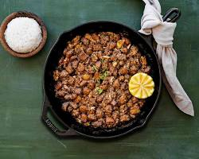

INGREDIENTS
- 500g ground pork
- 1 bell pepper, chopped
- 1 onion, chopped
- 2-3 cloves garlic, minced
- 1 tbsp ginger, minced
- 2-3 chilies, chopped (adjust based on your spice preference)
- 1/2 cup mayonnaise
- 1/4 cup soy sauce
- 1 tbsp calamansi or lemon juice
- 1 tsp sugar
- 1/2 tsp ground black pepper
- 1 tbsp cooking oil
|

|
PROCEDURE
- Heat oil in a pan over medium heat. Add onion, garlic, and ginger, cook until softened.
- Add ground pork and cook until browned, breaking it up with a spoon.
- Add bell pepper, chilies, and cook for another 2-3 minutes.
- Stir in mayonnaise, soy sauce, calamansi or lemon juice, sugar, and pepper. Mix well.
- Cook for 5-7 minutes, until heated through and flavors are combined.
- Serve hot with steamed rice and calamansi wedges.
|